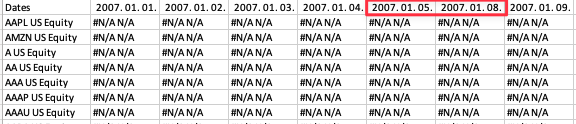

A whole game
Readings and class materials for Tuesday, September 26, 2023

date_to_colname <- function(.data) {
# * wide panel format > header are the dates started at 2nd col from 2017
dates <- seq.Date(
from = as.Date("2007-01-01"),
by = "days",
to = Sys.Date()
) |>
keep(~ lubridate::wday(., week_start = 1) %in% 1:5) |>
head(ncol(.data) - 1) |>
as.character()
.data |>
set_names(c("ticker", dates))
}bloomberg_raw <- list.files("../data/bloomberg", full.names = TRUE) |>
keep(str_detect, "/bloomberg_scores\\d{1,2}.xlsx") |>
map(.progress = "reading raw data", \(x) {
list(
news_heat = readxl::read_xlsx(x, sheet = 1, progress = FALSE) |>
date_to_colname(),
sentiment_avg = readxl::read_xlsx(x, sheet = 2, progress = FALSE) |>
date_to_colname()
)
})reading raw data ■■■■ 10% | ETA: 1mNew names:
New names:
reading raw data ■■■■■■■ 20% | ETA: 1m
reading raw data ■■■■■■■■■■ 30% | ETA: 1m
reading raw data ■■■■■■■■■■■■■ 40% | ETA: 1m
reading raw data ■■■■■■■■■■■■■■■■ 50% | ETA: 46s
reading raw data ■■■■■■■■■■■■■■■■■■■ 60% | ETA: 37s
reading raw data ■■■■■■■■■■■■■■■■■■■■■■ 70% | ETA: 27s
reading raw data ■■■■■■■■■■■■■■■■■■■■■■■■■ 80% | ETA: 18s
reading raw data ■■■■■■■■■■■■■■■■■■■■■■■■■■■■ 90% | ETA: 9s
• `` -> `...4274`
• `` -> `...4275`
• `` -> `...4276`
• `` -> `...4277`
• `` -> `...4278`
• `` -> `...4279`
• `` -> `...4280`
• `` -> `...4281`
• `` -> `...4282`
• `` -> `...4283`
• `` -> `...4284`
• `` -> `...4285`
• `` -> `...4286`
• `` -> `...4287`
• `` -> `...4288`
• `` -> `...4289`
• `` -> `...4290`
• `` -> `...4291`
• `` -> `...4292`news_heat_df <- bloomberg_raw |>
map_dfr(\(x) {
x$news_heat |>
pivot_longer(-1,
names_to = "time",
names_transform = ymd,
values_to = "news_heat") |>
mutate(
ticker = str_remove(ticker, " .*"),
news_heat = factor(news_heat, levels = 0:4, ordered = TRUE)
)
}) |>
drop_na()
news_heat_df# A tibble: 22,129,018 × 3
ticker time news_heat
<chr> <date> <ord>
1 AAPL 2010-02-16 0
2 AAPL 2010-02-17 2
3 AAPL 2010-02-18 1
4 AAPL 2010-02-19 0
5 AAPL 2010-02-22 2
6 AAPL 2010-02-23 3
7 AAPL 2010-02-24 2
8 AAPL 2010-02-25 4
9 AAPL 2010-02-26 3
10 AAPL 2010-03-01 4
# ℹ 22,129,008 more rowssentiment_avg_df <- bloomberg_raw |>
map_dfr(\(x) {
x$sentiment_avg |>
pivot_longer(-1,
names_to = "time",
names_transform = ymd,
values_to = "sentiment_avg") |>
mutate(
ticker = str_remove(ticker, " .*"),
sentiment_avg = as.numeric(sentiment_avg)
)
}) |>
drop_na()
sentiment_avg_df# A tibble: 31,270,528 × 3
ticker time sentiment_avg
<chr> <date> <dbl>
1 AMZN 2007-01-04 -0.500
2 AMZN 2007-01-05 -0.500
3 AMZN 2007-01-08 -0.500
4 AMZN 2007-01-09 -0.500
5 AMZN 2007-01-10 0.0555
6 AMZN 2007-01-11 0.0555
7 AMZN 2007-01-12 0.0555
8 AMZN 2007-01-15 0.0555
9 AMZN 2007-01-16 0.0555
10 AMZN 2007-01-17 0.0555
# ℹ 31,270,518 more rowsbloomberg_df <- list(
news_heat_df,
sentiment_avg_df
) |>
reduce(full_join, by = join_by(ticker, time)) |>
arrange(ticker, time)
bloomberg_df# A tibble: 34,499,579 × 4
ticker time news_heat sentiment_avg
<chr> <date> <ord> <dbl>
1 A 2007-01-05 <NA> 0.0506
2 A 2007-01-08 <NA> 0.0506
3 A 2007-01-09 <NA> 0.0506
4 A 2007-01-10 <NA> 0.0506
5 A 2007-01-11 <NA> 0.0506
6 A 2007-01-12 <NA> 0
7 A 2007-01-15 <NA> 0
8 A 2007-01-16 <NA> 0
9 A 2007-01-17 <NA> 0.558
10 A 2007-01-18 <NA> 0.319
# ℹ 34,499,569 more rows